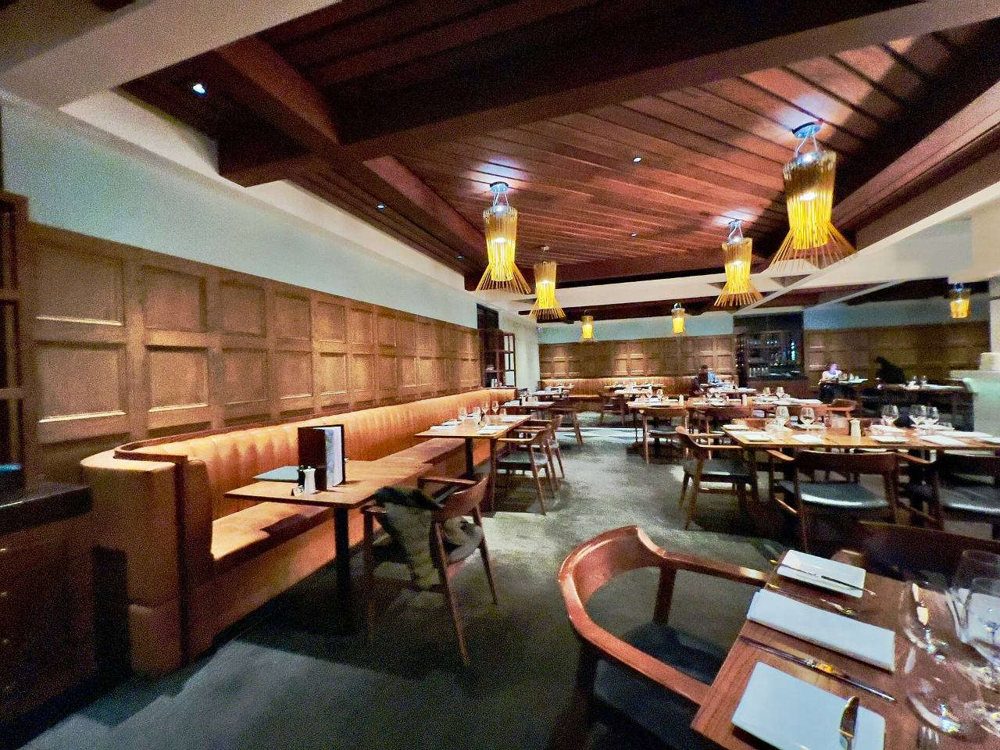
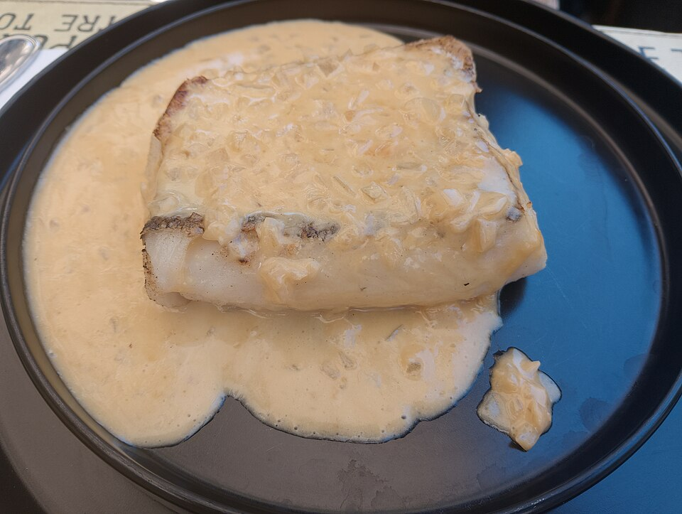
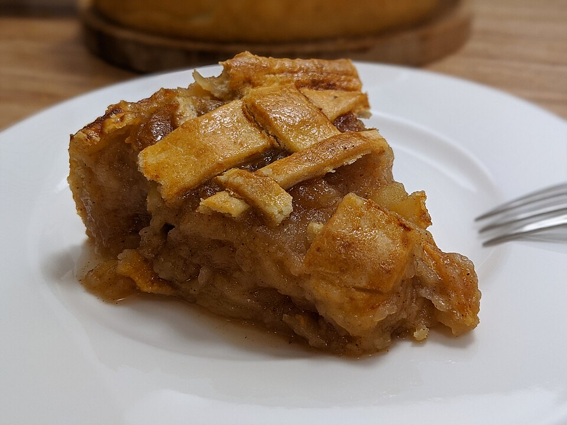
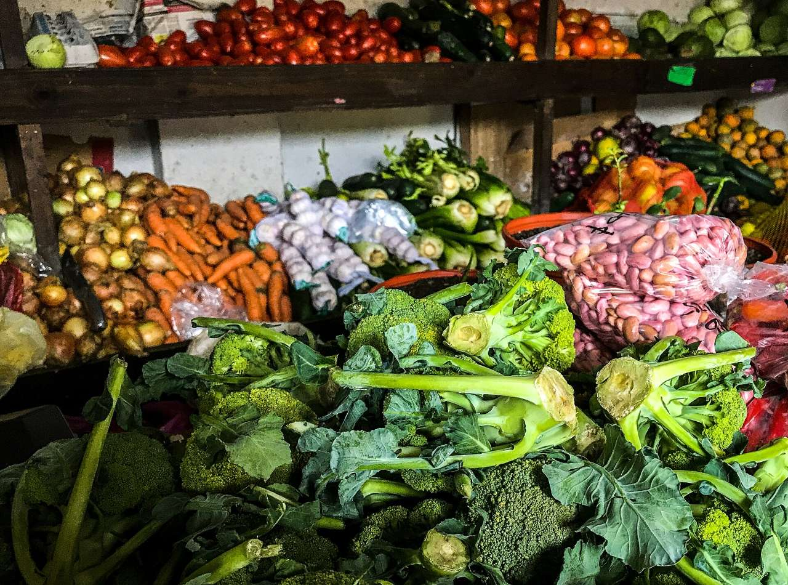

Cuisine du marché, à deux pas de la place de Forges-les-Eaux
L'ardoise de la semaine
Du mardi 24 au samedi 28 novembre
Les plats
- Filet de lieu au cidre, poireaux fondus17,50 €
- Andouille de Vire, purée à la moutarde15,50 €
- Poulet vallée d'Auge, crème et pommes18,50 €
- Assiette du maraîcher, œuf de la ferme14 €
Fromages et desserts
- Neufchâtel fermier, pain de campagne8 €
- Tarte aux pommes du verger6,50 €
- Teurgoule, riz au lait à la cannelle6 €
- Café gourmand7,50 €



Le jeudi, on fait le marché
Les légumes viennent du marché de Forges et des maraîchers voisins, la viande d'une boucherie de Gournay, le fromage des fermes du Bray. L'ardoise change chaque semaine avec ce qu'on trouve.
Sauces, purées et desserts sont faits ici le matin. Rien n'arrive tout prêt.
Horaires et accès
Horaires
- Mardi au vendredi
- 12 h – 14 h, 19 h – 21 h 30
- Samedi
- 19 h – 22 h
- Dimanche et lundi
- Fermé
Venir
Au centre de Forges-les-Eaux, à deux pas de la place.
Parking gratuit sur la place, à 2 minutes à pied.
Groupes
Jusqu'à 30 couverts en privatisant la salle du fond, pour un repas de famille ou d'association.
Réserver une table
On vous confirme par mail dans la journée. Pour le midi même, envoyez la demande avant 11 h.